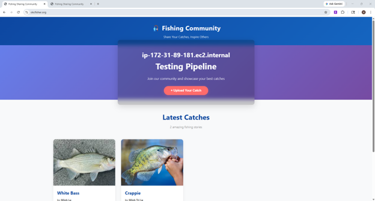

I'm Minh

A Software Engineer.
C/C++ | Java | Python | Cloud & DevOps | Azure | AWS | Kubernetes | Jenkins | CI/CD
About Me
I am a passionate Software Engineer who enjoys solving complex problems and continuously learning new technologies. I am persistent when facing technical challenges and view every project as an opportunity to improve my skills and deliver reliable solutions.
I currently work as a Software Engineer for the U.S. Air Force, where I develop and maintain mission-critical aircraft software. This experience has strengthened my expertise in building high-quality, dependable software while working in a disciplined engineering environment.
Outside of work, I continue expanding my knowledge through technical books, hands-on projects, and emerging technologies. I enjoy hiking, playing the guitar, and cooking, which help me maintain creativity and balance.
Working Experience
Computer Scientist
- Built, packaged, and released software for simulation and testing environments while maintaining the aircraft simulation infrastructure and providing technical support.
- Administered ClearCase on Linux and Windows, managing branches, labels, views, and user permissions, and developed Perl scripts to automate configuration management workflows.
- Investigated and resolved software defects, improving application stability and supporting successful software releases.
- Utilized Azure DevOps for version control, work item tracking, and code reviews to support collaborative software development and maintain code quality.
Math Tutor
- Assisted students with their difficult homework questions for pre-calculus.
- Helped students improve their math skills by explaining mathematical concepts in a way they could understand
- Assessed students’ learning progress and engagement throughout instructional sessions.
Personal Projects

- Built a highly available Flask web application on AWS using EC2, Nginx, Load Balancer, and Auto Scaling Group.
- Automated deployments with CodePipeline and CodeDeploy
- Configured Route 53, CloudFront, and ACM to enable secure HTTPS access and improve application reliability.
AWS
EC2
Nginx
CloudFront

- Developed an online bookstore application enabling users to purchase books and administrators to manage site content.
- Built an admin dashboard connected to the database to add, update, and remove book records.
- Implemented Java Servlets to retrieve and display book data dynamically on the user interface.
Java
JavaFX
SQL
Servlet

- Developed an interactive game where users control a player object to eliminate dynamically moving enemies.
- Applied object-oriented programming principles to design modular, maintainable game logic.
Java
JavaFX
OOP

- Analyzed transaction data to predict fraudulent activity using machine learning techniques.
- Performed data preprocessing and cleaning to reduce the risk of overfitting and underfitting.
- Evaluated and compared Decision Tree, Logistic Regression, and Neural Network models to identify the best-performing approach.
Python
Machine Learning
Data Analysis